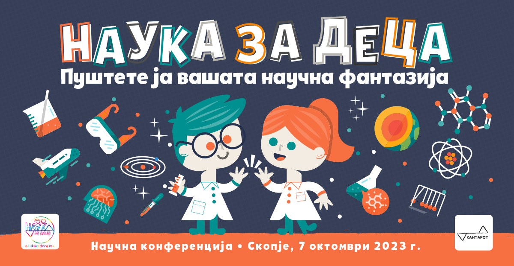

Во организација на Фондацијата „КАНТАРОТ“, под мотото „Пуштете ја вашата научна фантазија“, во сабота, на 7 октомври, ќе се одржи втората научна конференција „НАУКА ЗА ДЕЦА“. Конференцијата ќе се одржи во Меѓународното училиште НОВА, а нејзината цел е популаризација на науката кај најмладите.
Главниот дел од програмата на конференцијата се предавања и работилници организирани од проф. д-р Никола Стиков (Универзитет на Монтреал во Канада) и д-р Тања Павлеска (Институт Јожеф Стефан во Словенија). Преку нив децата на интересен начин ќе се запознаат со многу научни концепти, при што оваа година акцентот е на оптичките илузии и на законите на веројатноста. Работилниците се интерактивни, а љубопитните деца ќе можат да добијат одговори на своите прашања директно од научниците.
На конференцијата ќе се додели и првата НЗД награда за извонреден научен потенцијал „Иван Ќостаров“, донација од проф. д-р Венка Симовска (професорка на Универзитетот Архус во Данска). Исто така, ќе се објават победниците на конкурсот Научна фантазија за цртеж и дигитална уметност. За крај, ќе се доделат признанија на наставниците кои најмногу помогнаа со промоција на НЗД во училиштата.
|
09:30 - 09:45 |
Прием на регистрираните деца |
|
09:55 - 10:00 |
Обраќање и почеток на конференцијата |
|
10:00 - 12:00 |
Интерактивни предавања 1. Џам-илузиии: како мозокот ве лажепроф. д-р Никола Стиков и м-р Драгана Стикова Оптичките илузии ни покажуваат дека не треба секогаш да им веруваме на сопствените очи. Децата ќе имаат можност самите да создадат, истражат и разберат една вртоглава илузија. 2. Пишман или инает: неверојатна наградна иград-р Тања Павлеска и Дафинка Срезоска Веројатноста понекогаш не ја разбираат дури ни возрасните. Низ интерактивна апликација децата ќе научат како да ја употребат веројатноста за да донесат одлука. |
|
12:00 |
Изложба „Научна фантазија“ Финалистите од нашиот ликовен конкурс ќе имаат можност да ни ги раскажат своите научни фантазии преку нивните креации |
|
12:30 |
Доделување на награди
|
|
13:00 |
Затворање на конференцијата со мини закуска |
Вашето дете можете да го пријавите со пополнување на формуларот на линков: https://bit.ly/3tcuSVp.
За учеството на децата не се плаќа, но доброволните донации се добредојдени. Доколку сте во можност, донирајте на жиро сметката на Фондација „КАНТАРОТ“: 250-0010051639-69 (Шпаркасе банка).